기계설계산업기사 (2006-03-05 기출문제)
1과목: 기계가공법 및 안전관리
1. 보통 선반과 같으나, 정밀한 형식으로 되어 있으며, 테이퍼깍기 장치, 릴리이빙 장치가 부속되어 있는 선반은?
- 공구 선반
- 모방 선반
- 수직 선반
- 터릿 선반
(정답률: 49%)

2. 각도 측정기가 아닌 것은?
- 플러그 게이지
- 사인바
- 컴비네이션 세트
- 수준기
(정답률: 54%)
3. 밀링작업에서 하향절삭의 장점이 아닌 것은?
- 날이 부러질 염려가 없다.
- 날의 마멸이 적고, 수명이 길다.
- 날 하나 마다의 날 자리 간격이 짧다.
- 가공할 면의 시야가 좋다.
(정답률: 41%)
4. 드릴 머신으로 얇은 철판에 구멍을 뚫을 때, 그 판 밑에 무엇을 받치면 가장 좋을까?
- 구리판
- 강철판
- 나무판
- 니켈판
(정답률: 82%)
5. 일반적으로 손 다듬질 가공에 해당되지 않는 것은?
- 해머링(hammering)
- 스크레이핑(scraping)
- 파일링(filling)
- 호닝(honing)
(정답률: 70%)
6. 넓은 평면을 빨리 깍기에 적합한 밀링커터는?
- T-커터(T-cutter)
- 엔드 밀(end mill)
- 페이스 커터(face cutter)
- 앵글 커터(angle cutter)
(정답률: 73%)
7. 기계작업에서 고속 주축의 급유를 균등히 할 목적에 이용하는 급유법은?
- 핸드 오일링법(hand oiling)
- 링 급유법(ring oiling)
- 오일레스 오일링법(oiless oiling)
- 적하 급유법(drop oiling)
(정답률: 41%)
8. 기어 절삭용 공구가 아닌 것은?
- 호브(hob)
- 호운(hone)
- 랙 커터
- 피니언 커터
(정답률: 80%)
9. 선반 작업 중 안전관리에 적합하지 않은 것은?
- 연속된 칩(chip)은 쇠 솔을 사용, 제거한다.
- 바이트의 자루는 가능한 길게 물린다.
- 측정, 속도변환 등은 반드시 기계를 정지 후에 한다
- 선반작업 중 척, 핸들 등 공구는 기계 위에 놓아서는 안 된다.
(정답률: 83%)
10. 세라믹 공구의 주성분은?
- 산화알루미늄
- 니켈
- 크롬
- 텅스텐
(정답률: 68%)
11. 안전 작업 중 틀린 것은?
- 기계운전 중 정전시에는 스위치를 넣고 기다린다.
- 스위치 주위에는 재료를 놓지 않도록 한다.
- 퓨즈는 규정된 것만을 사용한다.
- 전동기에 절삭유가 스며들지 않도록 한다.
(정답률: 80%)
12. 연삭 숫돌 중 백색 산화 알루미늄 입자인 것은?
- WA숫돌
- C숫돌
- GC숫돌
- A숫돌
(정답률: 75%)
13. 공작기계의 절삭방식에서 입자에 의한 가공법이 아닌 것은?
- 샌드 블라스팅(sand blasting)
- 액체 호닝(liquid honing)
- 래핑(lapping)
- 호빙(hobbing)
(정답률: 51%)
14. 인벌류우트 곡선을 그리는 원리를 응용한 이의 절삭방법을 무엇이라고 하는가?
- 창성법
- 총형 커터에 의한 방법
- 형판에 의한 방법
- 래크 커터에 의한 방법
(정답률: 65%)
15. 세 개의 같은 지름의 철사를 사용하여 수 나사의 유효경을 측정하는 방법은?
- 지름법
- 삼창법
- 반지름법
- 등경법
(정답률: 84%)
16. 선반에서 기어, 벨트, 풀리 등의 소재와 같이 구멍이 뚫린 일감의 바깥 원통면이나 옆면을 가공할 때 사용하는 부속품은?
- 엔드밀
- 연동척
- 방진구
- 돌리개
(정답률: 32%)
17. 슬로터에서 일반적으로 가공할 수 없는 것은?
- 내부 스플라인
- 넓은 평면 가공
- 각 구멍
- 키이홈 가공
(정답률: 51%)
18. 연삭 숫돌에서 숫돌의 경도가 크다는 것은 무엇을 의미하는가?
- 입도
- 밀도
- 자생력
- 결합도
(정답률: 56%)
19. 볼나사(BALL SCREW)가 쓰이는 공작기계는?
- 수치제어선반
- 세이퍼
- 플레이너
- 슬로터
(정답률: 56%)
20. 구성인선(built-up edge)이 생기는 것을 방지하기 위한 대책으로서 틀린 것은?
- 바이트의 윗면 경사각을 크게 한다.
- 절삭 속도를 크게 한다.
- 윤활 성이 좋은 절삭 유를 사용한다.
- 칩 두께를 크게 한다.
(정답률: 78%)
2과목: 기계제도
21. 다음 중 광명단을 발라 실형을 뜨는 스케치법은?
- 프린트하는 방법
- 본뜨기 방법
- 모양 뜨기 방법
- 프리핸드에 의한 방법
(정답률: 50%)
22. 맞물리는 한 쌍의 기어에서 정면도를 단면으로 도시할 때 물려있는 잇 봉우리원을 표시하는 선은?
- 양쪽 다 굵은 실선
- 양쪽 다 굵은 파선
- 한 쪽은 굵은 실선, 다른 쪽은 파선
- 한 쪽은 굵은 실선, 다른 쪽은 굵은 일점 쇄선
(정답률: 37%)
23. 구멍 70H7(
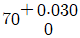
) 축 70g6 (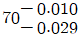
) 의 끼워 맞춤이 있다. 끼워 맞춤의 명칭과 최대 틈새는?- 중간 끼워 맞춤이며 최대 틈새는 0.01 이다.
- 헐거운 끼워 맞춤이며 최대 틈새는 0.⑤9 이다
- 억지 끼워 맞춤이며 최대 틈새는 0.029 이다.
- 헐거운 끼워 맞춤이며 최대 틈새는 0.039 이다.
(정답률: 74%)
24. 보기와 같은 표면의 결 지시방법 설명으로 올바른 것은?
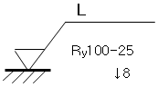
- 선반 가공을 하여야 한다.
- 컷 오프 값을 알 수 있다.
- 기준길이는 알 수 없다.
- 십점 평균 거칠기를 지시하였다.
(정답률: 44%)
25. 보기와 같이 가공에 의한 줄무늬 방향이 기입면의 중심에 대하여 동심원 모양 일 때 기호를 나타낸 것은?
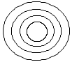
- C
- X
- M
- R
(정답률: 79%)
26. 물체의 경사진 면을 나타내는데 가장 적합한 투상도는?
- 관용 투상도
- 보조 투상도
- 회전 투상도
- 부분 투상도
(정답률: 72%)
27. 파단선에 대한 설명으로 올바른 것은?
- 대상물의 일부를 떼어낸 경계를 표시하는 선
- 외형선과 숨은선의 연장
- 평면이라는 것을 표시한 선
- 단면이라는 것을 명시하기 위해 쓰는 선
(정답률: 82%)
28. 도면 부품란의 재료기호에 기입된 SPS 6 는 어떤 재료를 의미하는가?
- 스프링 강재
- 스테인레스 압연강재
- 냉간압연 강판
- 기계 구조용 탄소강
(정답률: 66%)
29. 분할 판의 호칭 지름은 다음 중 어느 것으로 나타내는가?
- 핀 구멍의 지름
- 분할 핀의 한쪽의 지름
- 분할 핀 머리 부분의 지름
- 두 개의 핀 재료를 합쳤을 때의 가상 원의 지름
(정답률: 39%)
30. 다음 중 단면도의 절단된 부분을 나타내는 해칭선은?
- 가는 2점 쇄선
- 가는 실선
- 숨은선
- 가는 1점 쇄선
(정답률: 80%)
31. 보기와 같은 입체도의 제3각 정투상도로 가장 적합한 것은?
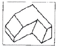
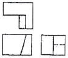
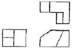
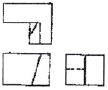
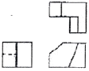
(정답률: 79%)
32. 보기와 같은 입체도의 제3각 정투상도로 가장 적합한 것은?
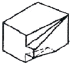
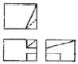
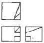
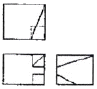
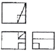
(정답률: 58%)
33. 어떤 물체를 제 3 각법으로 정 투상한 보기와 같은 투상도 에서 누락된 정면도로 가장 적합한 것은?
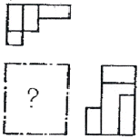
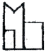
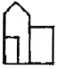
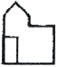
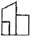
(정답률: 72%)
34. 다음 도면과 같은 데이텀 표적 도시기호의 의 미 설명으로 올바른 것은?
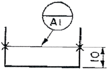
- 두 개의 X 점이 각각 점의 데이텀 표적
- 10mm 높이의 직사각형의 면이 데이텀 표적
- 두 개의 X 표를 연결한 선이 데이텀 표적
- 두 개의 X 표를 연결한 선을 반지름으로 하는 원이 데이텀 표적
(정답률: 74%)
35. 기어의 부품도는 그림을 병용하여 항목표를 작성하는 데 표준 평 치차(스퍼 기어)와 헬리컬 기어 항목표에 모두 기입 되어 있는 것은?
- 리드
- 비틀림 방향
- 비틀림 각
- 기준 래크 압력각
(정답률: 48%)
36. 나사를 도시하는 방법으로 가장 적절한 것은?(오류 신고가 접수된 문제입니다. 반드시 정답과 해설을 확인하시기 바랍니다.)
- 수나사의 바깥 지금은 가는 실선으로 그린다.
- 수나사의 골 지름은 굵은 실선으로 그린다.
- 암나사의 골 지름은 가는 실선으로 그린다.
- 완전 나사부와 불완전 나사부의 경계선은 굵은 실선으로 그린다.
(정답률: 52%)
37. 보기 입체도의 화살표 방향 투상도로 가장 적합한 것은?
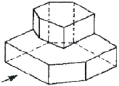
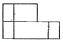
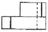
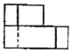
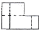
(정답률: 73%)
38. 기하 공차 도시방법에 사용되는 기호 중 위치 공차에 관한 기호 표시가 아닌 것은?
- 동축도 :

- 대칭도 :

- 위치도 :

- 직각도 :

(정답률: 64%)
39. 일반적으로 도면의 표제란 위에 있는 부품 란에 기입 되어있지 않는 것은?
- 수량
- 품번
- 품명
- 단가
(정답률: 79%)
40. 기계제도 도면의 구름 베어링 제도에서 상세한 간략 도시방법 중에 보기와 같은 상세한 도시방법인 베어링은?
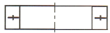
- 단열 니들 롤러 베어링
- 단열 깊은 홈 볼 베어링
- 스러스트 볼 베어링
- 단열 원통 롤러 베어링
(정답률: 29%)
3과목: 기계설계 및 기계재료
41. 실제로 액체 금속이 응고할 때에는 반드시 융점의 온도에서 응고가 시작되는 일은 적고, 용융점 보다 낮은 온도에서 응고가 시작된다. 이 현상을 무엇이라 하는가?
- 서냉
- 급냉
- 과냉
- 급냉과 과냉의 겹침
(정답률: 44%)
42. Fe-C 상태도의 Ao 점에서 시멘타이트의 자기변태가 발생되는 온도는?
- 727˚C
- 210˚C
- 1492˚C
- 738˚C
(정답률: 38%)
43. White-gold를 설명한 것 중 옳은 것은?
- Ag 에 Zn을 도금한 것이다.
- Au-Ni-Cu-Zn 계 합금으로서 치과용으로 사용된다.
- Au-Pb 등 합금으로 화폐에 이용한다.
- Ag 의 순도를 90% 이하로 낮추어 공업용으로 사용된다.
(정답률: 42%)
44. 다음 중 금속의 재 결정에 관하여 틀리게 설명한 것은?
- 가공도가 클수록 재결정 온도는 낮다.
- 결정입자가 미세할수록 재결정 온도는 낮다.
- 재결정 과정과 동시에 성분변화가 일어난다.
- 재결정은 새로운 결정립의 핵 생성과 성장의 과정이다.
(정답률: 27%)
45. 다음 중 온도변화에 따른 탄성률의 변화가 미세하고, 고급시계, 정밀저울의 스프링 등에 쓰이는 금속재료는?
- 인코넬(Inconel)
- 엘린바(Elinvar)
- 니크롬(Nichrome)
- 실친브론즈(Silzin Bronze)
(정답률: 64%)
46. 전연성이 좋고 색깔도 아름답기 때문에 장식용 금속 잡화, 모조금 등에 사용되는 황동은?
- 95% Cu-5% Zn(gilding metal)
- 90% Cu-10% Zn(commerical bronze)
- 85% Cu-15% Zn(red brass)
- 80% Cu-20% Zn(low brass)
(정답률: 38%)
47. Al계 합금으로 피스톤 재료에 사용되는 Y합금은 어는 것인가?
- Al - Cu - Ni - Mg
- Al - Mg - Fe
- Al - Cu - Mo - Mn
- Al - Si - Mn - Mg
(정답률: 69%)
48. 탄소강 중 열처리하여 프레스금형의 펀치, 다이 및 각종 핀류 제작에 사용될 수 있는 재료는 ?
- SM10C - SM15C
- SM20C - SM25C
- SM30C - SM35C
- SM40C - SM50C
(정답률: 56%)
49. 다음 담금질 조직 중에서 경도가 가장 큰 것은?
- 페라이트
- 오스테나이트
- 마텐자이트
- 트루스타이트
(정답률: 73%)
50. 금속기지 복합재료는?
- CMC
- MMC
- FRP
- PMC
(정답률: 36%)
51. 나사의 이완방지로서 다음 것을 사용한다. 맞지 않는 것은?
- 로크너트
- 분할 핀
- 캡 너트
- 와셔
(정답률: 35%)
52. 힘을 한 방향으로만 받는 부품에 이용되는 나사로 나사산 각은 30˚ 와 45˚ 2종류가 있는 나사는?
- 사각나사
- 사다리꼴나사
- 톱니나사
- 둥근나사
(정답률: 40%)
53. 다음 중 두 축의 상대위치가 평행할 때 사용되는 기어는?
- 베벨 기어
- 나사기어
- 웜과 웜기어
- 헬리컬 기어
(정답률: 40%)
54. 물체의 양단에 압축력이 작용하여 하중방향의 직각인 단면에 발생하는 수직 응력은?
- 인장응력
- 전단응력
- 압축응력
- 굽힘응력
(정답률: 50%)
55. 다음 키 중에서 가장 큰 동력을 전달할 수 있는 것은?
- 안장 키
- 뭍힘 키
- 납작 키
- 스플라인
(정답률: 74%)
56. 피치원 지름이 일정한 기어에서 치의 크기가 가장 큰 기어는 어느 것인가?
- m = 2
- pd = 12
- m = 2.5
- pd = 10
(정답률: 28%)
57. 베어링 번호 No.6208인 레이디얼 볼베어링의 안지름은?
- 20mm
- 30mm
- 40mm
- 50mm
(정답률: 67%)
58. 유체의 역류를 방지하여 한 방향으로 흘러가게 하는 밸브는?
- 스톱 밸브
- 슬루스 밸브
- 체크 밸브
- 안전 밸브
(정답률: 68%)
59. 하중을 받치는 방향에 따라 베어링을 분류할 때 레이디얼 베어링의 설명으로 맞는 것은?
- 축에 직각방향의 하중을 받쳐주는 베어링
- 축 방향의 하중을 받쳐주는 베어링
- 축의 직각방향과 축 방향의 두 하중을 받쳐주는 베어링
- 하중의 방향이 회전축의 축선과 일치하는 베어링
(정답률: 37%)
60. S-N(응력진폭-반복횟수)선도에서 응력의 값이 어느 일정한 값에 도달하면 곡선이 수평으로 되어, 이 응력 이하에서는 아무리 반복 횟수를 늘려도 파괴되지 않게 한다. 이 응력의 한도 값을 무엇이라 하는가?
- 응력한도
- 반복한도
- 피로한도
- 수평한도
(정답률: 48%)
4과목: 컴퓨터응용설계
61. 두 점 (-5,0), (4,-3)을 지나는 직선의 방정식은?
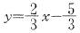
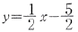
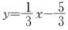
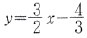
(정답률: 43%)
62. 모델링 기법 중에서 실루엣(silhouette)을 구할 수 없는 모델링 기법은?
- B-rep 방식(Boundary Representation)
- CSG 방식(Construct Solid Geometry)
- 서피스 모델방식(Surface Modeling)
- 와이어 프레임 모델방식(Wire Frame Modeling)
(정답률: 69%)
63. 다음 보조 기억장치 중에서 조성된 자료를 액세스(access) 하는 방식이 다른 것과 구분되는 한가지는?
- 하드 디스크 및 드라이브
- 플로피 디스크 및 드라이브
- 광 디스크 및 드라이브
- 자기 테이프 및 드라이브
(정답률: 39%)
64. 변환 행렬(matrix)을 생성할 필요가 없는 작업은?
- Scale
- Erase
- Rotate
- Mirror
(정답률: 65%)
65. 2차원에서 하나의 원을 정의하는 방법 중 틀린 것은?
- 원의 중심과 반지름
- 일직선상에 있지 아니한 임의의 3점
- 기울기가 서로 다른 3직선에 접하는 원
- 중심과 원주상의 한점
(정답률: 29%)
66. 기억장치에서 데이터를 꺼내는데 소요되는 시간으로 대기 시간과 전송시간을 합친 시간을 무엇이라 하는가?
- 리드 타임(lead time)
- 액세스 타임(access time)
- 오프 타임( off time)
- 온 타임(on time)
(정답률: 62%)
67. 펜 끝에 감광 소자를 내장하여 메뉴를 선택하거나 그림을 그리면 컴퓨터가 이를 인식하여 입력하는 방식은?
- 터치스크린(touth screen)
- 섬 휠(thumb wheel)
- 트랙 볼(track ball)
- 라이트 펜(light pen)
(정답률: 65%)
68.
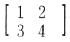
인 직선을 x 방향으로 3만큼, y 방향으로 4만큼 이동시킨 결과는?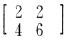
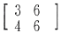
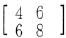
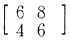
(정답률: 72%)
69. 서페이스 모델링의 특징이 아닌 것은?
- 은선이 제거될 수 있고 면의 구분이 가능하다.
- 관성모멘트 값을 계산할 수 있다.
- 표면적 계산이 가능하다.
- NC data에 의한 NC가공작업이 수월하다.
(정답률: 64%)
70. 다음 중 컴퓨터 입력장치 중에서 인쇄된 그림이나 글씨를 쉽게 입력할 수 있는 장치는?
- 스캐너
- 키보드
- 플로터
- 마우스
(정답률: 68%)
71. 곡면(surface)으로 기하학적 형상을 정의하는 과정에서 곡면 구성 종류가 아닌 것은?
- Coon's 곡면
- 회전 곡면(Revolved Surface)
- 베지어 곡면(Bezier Surface)
- 트위스트 곡면(Twist Surface)
(정답률: 61%)
72. B-spline 곡선을 정의하기 위해 필요하지 않은 입력요소는?
- 치수(order)
- 끝점에서의 접선(tangent) 벡터
- 조정점
- 절점(knot) 벡터
(정답률: 28%)
73. 도형 변환 행렬 [x , y]
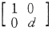
= [x',y']에서 0 ＜ d ＜ 1 이면 어떤 변환을 하는가?- x 방향 확대
- y 방향 확대
- x 방향 축소
- y 방향 축소
(정답률: 28%)
74. NURBS곡선에 대한 설명으로 틀린 것은?
- 원, 타원, 포몰선, 쌍곡선등 원추 곡선을 정확하게 나타낼 수 있다.
- 일반적인 B-Spline 곡선을 포함한다.
- 3차 NURBS곡선은 특정 노트구간에서 4개의 조정점 외에 4개의 가중값(weights value)과 노트(knot)벡터의 정보가 이용된다.
- 모든 조정점을 지나는 부드러운 곡선이다.
(정답률: 30%)
75. 솔리드 모델링의 특징 중에서 가장 관계가 먼 것은?
- 은선 제거가 가능하다.
- 물리적 성질 등의 계산이 불가능하다.
- 간섭 체크가 용이하다.
- 데이터 처리가 많아 진다.
(정답률: 65%)
76. 솔리드 모델링 방법에서 하나의 입체를 둘러싸고 있는 면을 조합하여 표현한 방식은 어느 것인가?
- CSG 방식
- CYLINDER 방식
- FEM 방식
- B-REP 방식
(정답률: 41%)
77. Bezier curve(베지어 곡선)의 특징이 아닌 것은?
- 곡선은 정점으로 구성되는 블록 다각형의 내측에 존재한다.
- 곡선은 양단의 정점을 통과한다.
- n 개의 정점에 의해서 정의되는 곡선은 (n-2)차 곡선이다.
- 1개 정점의 변화는 곡선 전체에 영향을 미친다.
(정답률: 67%)
78. 중앙처리장치(CPU)의 구성요소가 아닌 것은?
- 기억장치
- 파일저장장치
- 연산논리장치
- 제어장치
(정답률: 74%)
79. 필름에 도포한 잉크를 발열 저항체로 배열한 써멀 헤드로 녹여 기록지에 작성하는 방식으로 빠른 프린터 속도와 사진과 같은 인쇄 효과를 얻는 출력 장치는?
- 레이저 빔식
- 정전식
- 광전식
- 열전사식
(정답률: 54%)
80. 자주 설계되는 홀(hole), 키 슬롯(key slot), 포켓(pocket) 등을 라이브러리(library)에 미리 갖추어 놓고 필요 시 이들의 치수를 변화시켜 단품 설계에 사용하는 모델링 방식을 무엇이라 하는가?
- Parametric modeling
- Feature-based modeling
- Solid modeling
- Boolean operation
(정답률: 48%)